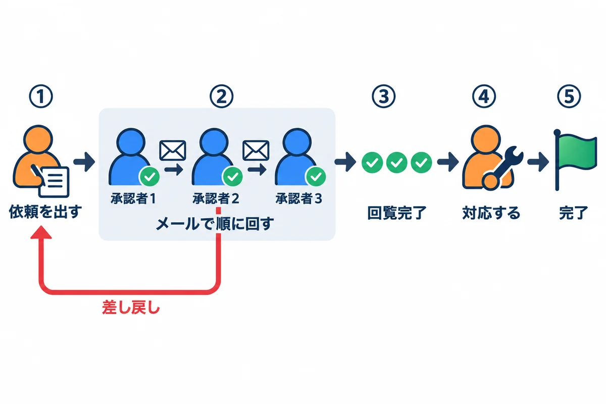
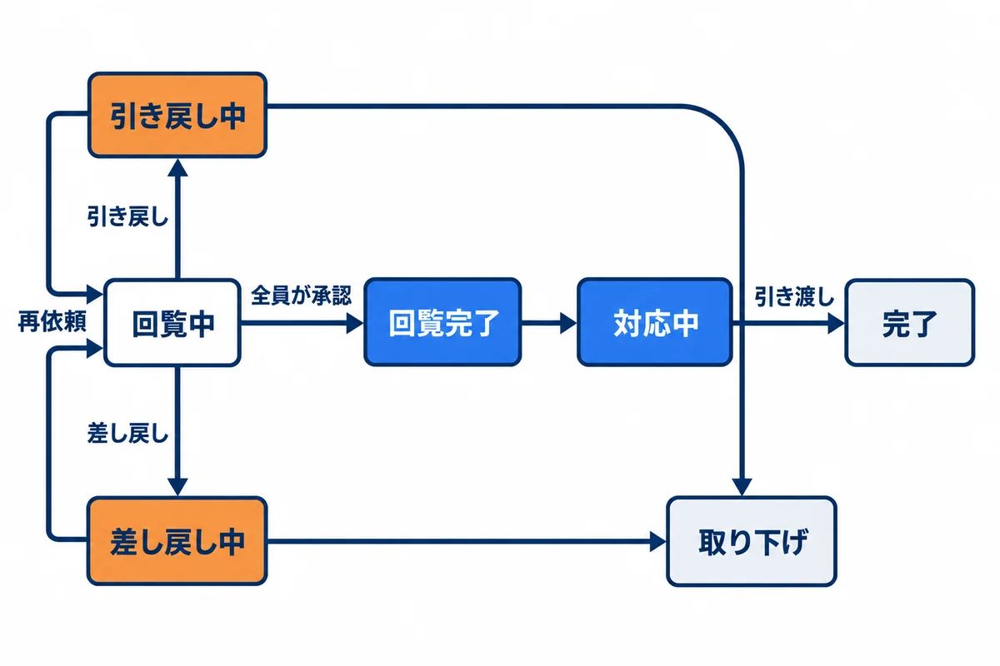
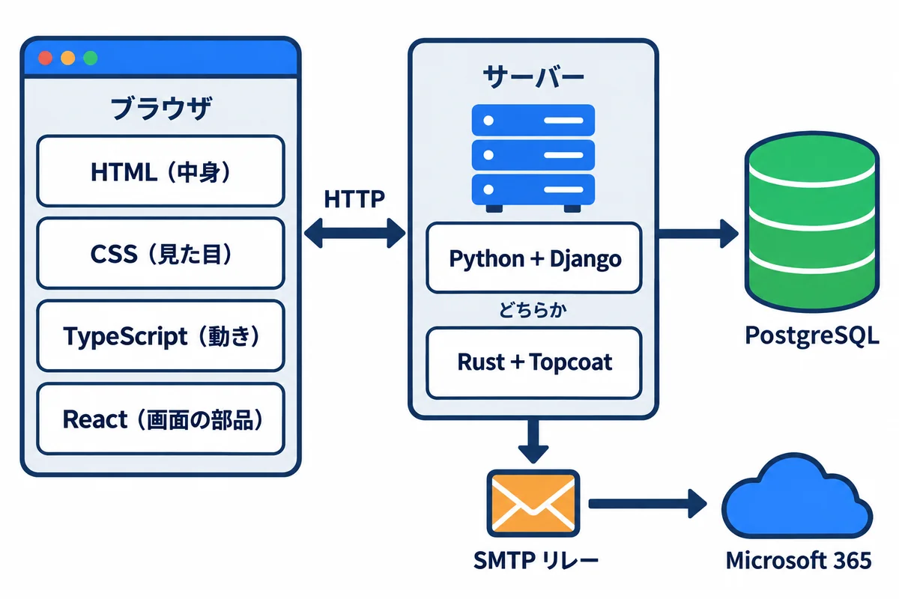
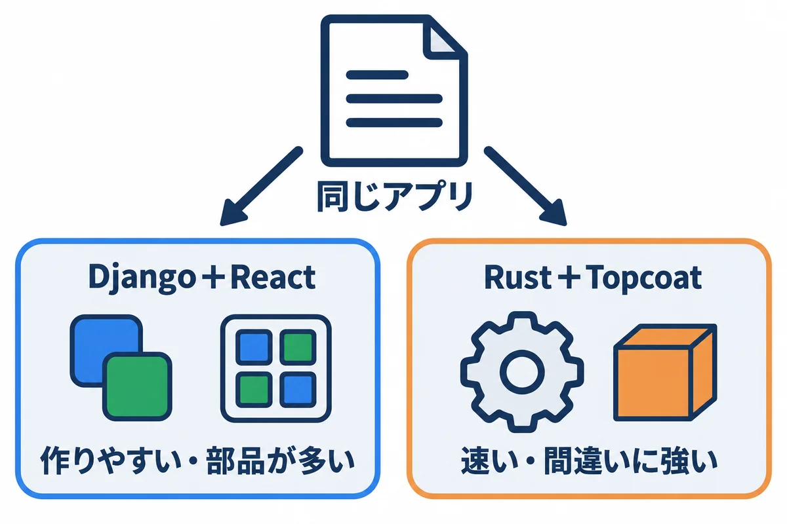
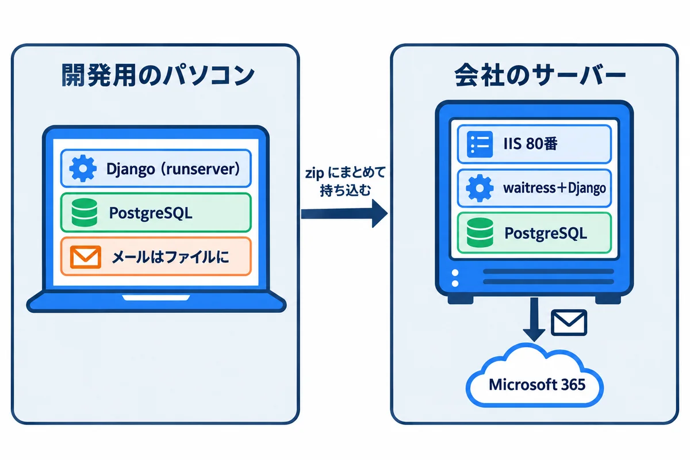
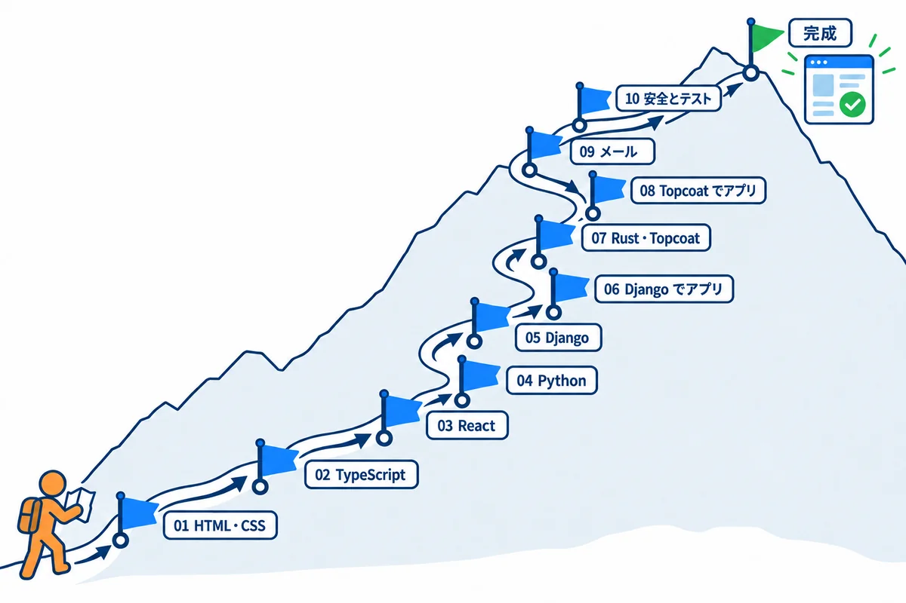
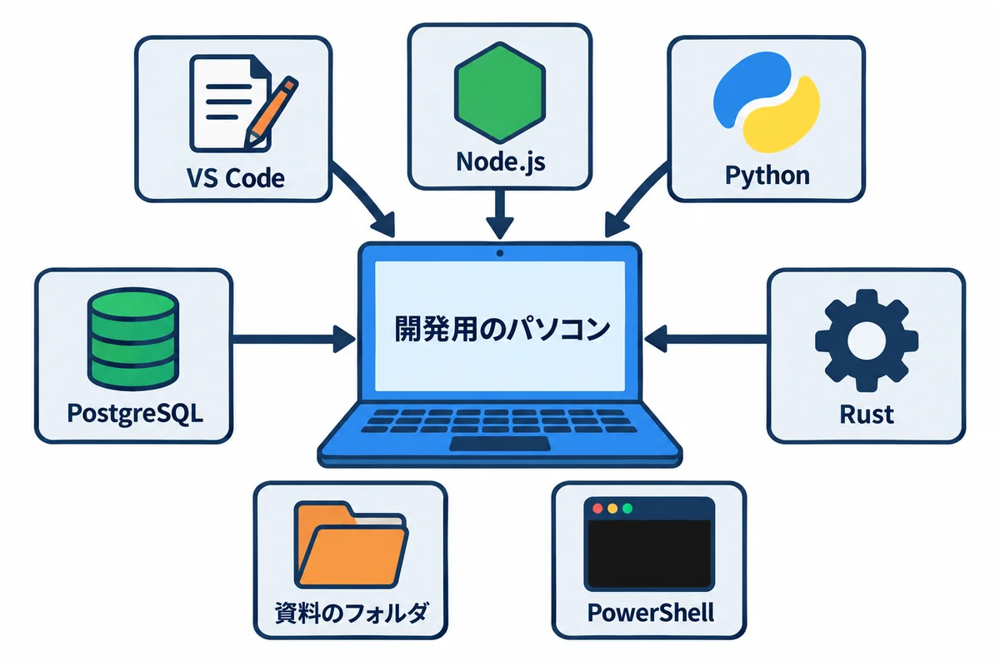
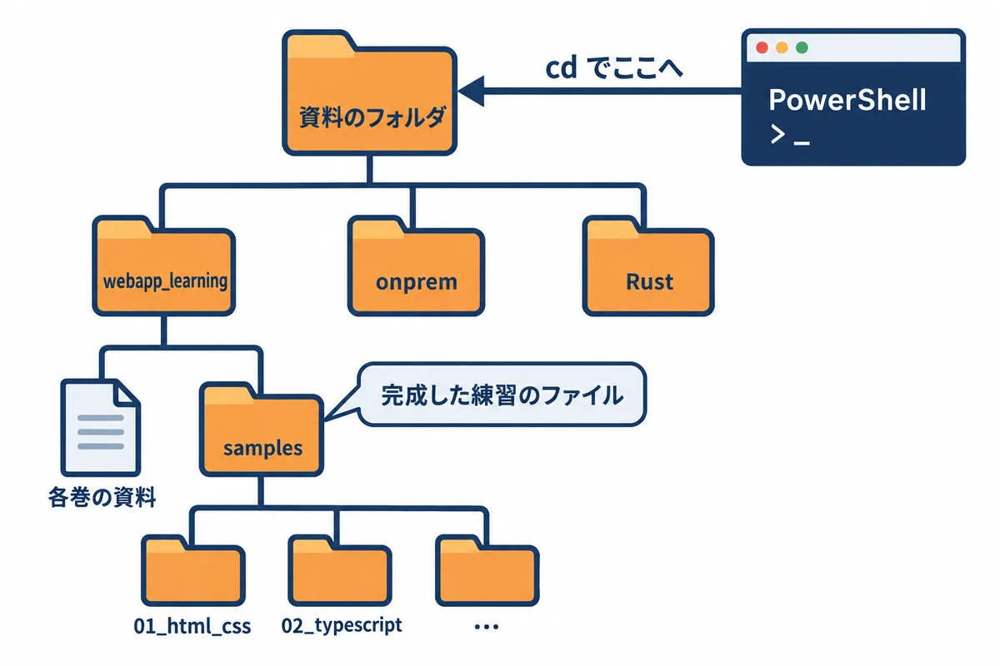
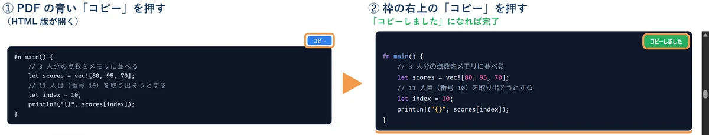

色の付いた枠のコードの、右上の「コピー」ボタンを押してください。コピーしたら、PDF を見ていた画面に戻ります（ブラウザーで PDF を見ていた時は「戻る」、VS Code で見ていた時は VS Code の窓に切り替えます）。
この資料集は、プログラミングや Web の経験がほとんど無い人が、社内向けの業務 Web アプリを作れるようになるための教材です。
samples/ のフォルダにあり、実際に動かして確かめた物です。用語: Web アプリ（ブラウザで開いて使うアプリ。社員のパソコンにアプリを入れなくても、URL を開くだけで使える）

社員が、ほかの部署に「これをお願いします」という依頼を出し、上司などが順に承認してから、担当の部署が対応する、という社内のよくある仕事を、アプリにします。

依頼は、いつも 7 つの状態のどれか 1 つです。「どの状態から、どの操作で、どの状態へ進めるか」を決めておくことが、業務アプリのいちばん大事な設計です（06・08 で、プログラムにします）。
| 状態 | 意味 | 依頼した人ができること |
|---|---|---|
| 回覧中 | 承認者の確認を待っている | 見る・引き戻す（直すことはできない） |
| 差し戻し中 | 承認者から直すように言われた | 直して出し直す・取り下げる |
| 引き戻し中 | 自分で取り戻した | 直して出し直す・取り下げる |
| 回覧完了 | 全員が承認した | 見る |
| 対応中 | 担当者が作業している | 見る |
| 完了 | 終わった | 見る |
| 取り下げ | やめた | — |
用語: 状態遷移図（じょうたいせんいず：状態を四角、移り変わりを矢印で描いた図。「この状態からは、この操作しかできない」を、目で確かめられる）
練習アプリには、社内の業務アプリでよく出てくる機能を、ひととおり入れます。
| 機能 | 中身 | 主に学ぶ技術 | 資料 |
|---|---|---|---|
| ログイン | 社員番号とパスワードでログイン。60 分操作が無いと、自動でログアウト | セッション・クッキー・パスワードの安全な保存 | 05・06・08・10 |
| 権限 | 一般の社員・承認者・担当者・管理者で、できることを変える | 権限の確かめ方 | 06・08・10 |
| 依頼の入力 | 件名・内容・納期・回覧者を入れる画面 | HTML のフォーム・CSS・React のフォーム | 01・03・06 |
| 図面 | 画面の上で図を描き、JSON というデータの形で保存する | JSON・TypeScript・Canvas | 02・03・06 |
| 添付ファイル | JPG・PNG・PDF を付ける（1 ファイル 10MB まで） | ファイルの受け取りと、種類・大きさの確かめ | 06・08・10 |
| 承認の回覧 | メールの URL から承認・差し戻し。URL は 1 回限り・14 日で期限切れ | 状態遷移・推測できない URL・メール送信 | 06・08・09・10 |
| 一覧・詳細 | 自分の依頼の一覧、状態の色分け、進み具合 | 表・データベースの検索・API | 01・03・05・06 |
| 社員データの取り込み | 社員の一覧を CSV で取り込む | CSV・文字コード・トランザクション | 04・06 |
| 毎朝の通知 | 毎朝 8:00 に、期限の近い依頼や止まっている承認をメールで知らせる | 定期処理 | 06・08・09 |
| グラフ | 担当者ごとの件数などをグラフで見る | 集計の SQL・グラフの部品 | 06 |
| メール | 会社の Microsoft 365 を通して送る | SMTP・SMTP リレー | 09 |

| 場所 | 技術 | ひとことで言うと | 資料 |
|---|---|---|---|
| ブラウザ | HTML | 画面の中身と骨組み（見出し・入力欄・表） | 01 |
| ブラウザ | CSS | 画面の見た目（色・大きさ・並べ方） | 01 |
| ブラウザ | TypeScript | 画面の動きを書く言葉（JavaScript に「型」を足した物） | 02 |
| ブラウザ | React | 画面を部品（コンポーネント）に分けて作る道具 | 03 |
| サーバー | Python＋Django | サーバーの言葉と、Web アプリの全部入りの土台 | 04・05・06 |
| サーバー | Rust＋Topcoat | 速くて間違いに強い言葉と、その Web の土台 | 07・08 |
| データベース | PostgreSQL（SQL） | データを表で保存する | 05・06・08（onprem の 02 も） |
| メール | SMTP・SMTP リレー | メールを送る決まりと、会社のメールに配達を任せる仕組み | 09 |
| 間をつなぐ | HTTP・JSON | ブラウザとサーバーの会話の決まりと、データの書き方 | 02・05 |
用語: フロントエンド・バックエンド（ブラウザの中で動く側＝画面と、サーバーの中で動く側＝処理とデータ）

| Django＋React | Rust＋Topcoat | |
|---|---|---|
| 画面 | React（TypeScript）で作り、サーバーとは JSON でやり取り | サーバーで HTML を作って返す（Topcoat の機能） |
| サーバー | Python＋Django | Rust＋Topcoat |
| 長所 | 部品が多く、早く作れる。管理画面が最初から付いている | 実行ファイル1つで動き、速い。型が強く、間違いを作る前に見つけやすい |
| 短所 | 画面とサーバーの 2 つを作る。部品の更新の手間が多い | 覚えることが多い。Topcoat はまだ新しい（0.x の版） |
| サーバーへの建て方 | onprem の 05 | onprem の 04 |
どちらか一方だけを学んでもかまいません。初めての人には、Django＋React から始めることをすすめます。情報と部品が多く、つまずいたときに調べやすいからです。
用語: 技術スタック（アプリを作るのに組み合わせて使う技術の一式。onprem の 03 で、選び方を比べている）

この資料集で作る練習アプリは、onprem/ の資料のとおりに、会社の Windows Server（仮想マシン）に建てる前提で作ります。だから、作り方の中に、次のような「会社のサーバーの事情」が入っています。
| 会社のサーバーの事情（onprem） | この資料集での扱い | 巻 |
|---|---|---|
| 社内では HTTPS を使えないので、HTTP（80 番）で動かす | ログインのクッキーに Secure を付けない設定にする |
06・08（onprem の 04 の 6.4・05 の 8 章） |
| IIS が、名前で本番と検証を振り分けて、アプリに取り次ぐ | アプリは、受け付ける名前（ALLOWED_HOSTS など）を決める |
06・08 |
| データベースは、仮想マシンの中の PostgreSQL | 06・08 は PostgreSQL で作る（05 の最初の練習だけ SQLite） | 05・06・08 |
| Django は waitress で動かし、WinSW で Windows サービスにする。React の画面の成果物は、Django のプロジェクトの中に置いて、Django が配る | その形で作る | 06（onprem の 05） |
| Rust＋Topcoat は、実行ファイル 1 つを WinSW で Windows サービスにする | その形で作る | 08（onprem の 04） |
| メールは、Microsoft 365 の SMTP リレー（25 番）で送る | 開発中はメールをファイルに書き、サーバーでは SMTP で送る | 06・09 |
| サーバーはインターネットにつながらない | 部品は、開発用のパソコンで取り寄せて持ち込む | 06・08（onprem の 05 の 7.2） |
| サーバーごとの設定とパスワードは、WinSW の XML の環境変数で渡す | アプリは、onprem の XML と同じ名前の環境変数を読む | 06・08 |
| 本番と検証が同じサーバーにある | 検証のメールは、決まった宛先だけに送る（MAIL_REDIRECT_TO） |
06 |
作る人と建てる人が同じでも、別でも: この資料集（作る）と onprem（建てる）は、同じ名前・同じ設定でつながっています。作る側で設定の名前を変えたら、onprem の XML も同じように直します。

| 巻 | 内容 | 先に読む物 | Django＋React の道 | Rust＋Topcoat の道 |
|---|---|---|---|---|
| 01 | HTML と CSS | この巻 | ● | ● |
| 02 | TypeScript の基礎 | 01 | ● | （画面の動きを書くなら） |
| 03 | React の基礎 | 02 | ● | — |
| 04 | Python の基礎 | — | ● | — |
| 05 | Django の基礎 | 04 | ● | — |
| 06 | Django＋React で練習アプリを作る | 03・05 | ● | — |
| 07 | Rust と Topcoat の基礎 | 01 | — | ● |
| 08 | Topcoat で練習アプリを作る | 07 | — | ● |
| 09 | メールと SMTP リレー | 06 か 08 | ● | ● |
| 10 | 安全とテスト | 06 か 08 | ● | ● |
全部の巻ができています。06 と 08 は、それぞれ前編（サーバー側）と後編（画面側）に分かれています（README の一覧）。
このリポジトリには、ほかにも資料があります。この資料集は、それらを入口からつなぐ役目です。深く知りたいときは、次を読みます。
| フォルダ | 中身 | この資料集との関係 |
|---|---|---|
onprem/ |
会社のサーバー（Windows Server）に、アプリを建てて運用する | 作ったアプリを、どうやって社内で動かすか |
docs/ |
Django＋React の業務アプリ（別のアプリ）を、1 行ずつ読み解く全 13 章 | 01〜06 の、さらに詳しい説明（HTML・CSS・TypeScript・React・Python・Django・テスト） |
Rust/ |
Rust と Topcoat を、ゼロから完成まで学ぶ全 14 巻 | 07・08 の、さらに詳しい説明 |
next/・react_native/ |
Next.js・React Native のアプリの作り方 | 別の作り方（参考） |
この資料のコードを、自分のパソコンで動かすための準備です。巻ごとに要る道具が違うので、表の「要る巻」を見て、これから読む巻に要る物だけ入れればかまいません。

| 道具 | 要る巻 | この資料で確かめた版 | 入れ方 |
|---|---|---|---|
| VS Code（エディター） | 全部 | 1.129.1 | 6.2 |
| Node.js | 02・03・06・10 | 25.9.0 | 6.3 |
| Python | 04・05・06・09・10 | 3.14.4 | 6.4 |
| PostgreSQL | 06・08・10 | 18.3 | 6.5 |
| Rust | 07・08 | 1.99.1 | 6.6 |
| ブラウザ | 全部 | Edge か Chrome | 最初から入っている |
資料のフォルダ: この資料一式（webapp_learning・onprem・Rust などのフォルダが入った物）を、自分のパソコンに置いた場所を、この資料では「資料のフォルダ」と呼びます。例えば C:\Users\you\Documents\def に置いたとします（you は自分の Windows のユーザー名）。

C:\Users\you\Documents\def\ ← 資料のフォルダ
├─ webapp_learning\
│ ├─ 01_HTMLとCSS_….md ← この資料（各巻）
│ ├─ samples\
│ │ ├─ 01_html_css\ ← 01 の練習のファイル（完成した物）
│ │ ├─ 02_typescript\
│ │ └─ …
│ └─ images\
├─ onprem\
└─ Rust\
PowerShell の開き方: 画面の下のスタートボタンを押し、powershell と打って、「Windows PowerShell」を選びます（文字を打ってパソコンに指示する窓が開きます）。
資料のフォルダへ移動する: 各巻に cd webapp_learning\samples\02_typescript のように書いてあるのは、資料のフォルダにいるところから打つコマンドです。PowerShell を開いたら、最初に資料のフォルダへ移動します。
# 例: 資料を C:\Users\you\Documents\def に置いたとき（~ は C:\Users\you のこと）
cd ~\Documents\def
▶ ここで初めて出てくるコード
cd（PowerShell）: 「change directory（フォルダを移る）」の略。cd rust-studyで、今いるフォルダの中のrust-studyへ移ります。cd ..は 1 つ上のフォルダへ、cd ~はホームフォルダ（C:\Users\you）へ戻ります。今いる場所は、行の頭のPS C:\Users\you\rust-study>の部分に表示されます。
ヒント: エクスプローラーで資料のフォルダを開き、上のアドレス欄に
powershellと打って Enter キーを押すと、そのフォルダにいる PowerShell が開きます。
https://code.visualstudio.com/ を開き、Windows 用をダウンロードします。code --version
▼ 実行結果（この資料を作ったパソコン。3 行目は CPU の種類で、多くのパソコンでは x64）
1.129.1
8a7abeba6e03ea3af87bfbce9a1b7e48fed567b8
arm64
▶ ここで初めて出てくるコード
code（コマンド）: VS Code を動かすコマンド。code .で今のフォルダを開き、code --versionで版を確かめます。
VS Code の基本の使い方（この資料で使う所だけ）:
| したいこと | やり方 |
|---|---|
| フォルダを開く | PowerShell でそのフォルダにいるときに code . と打つ。または VS Code の「ファイル」→「フォルダーを開く」 |
| ファイルを開く | 左の一覧（エクスプローラー）で、ファイルの名前を押す |
| 新しいファイルを作る | 左の一覧で、入れたいフォルダを右クリック →「新しいファイル」→ 名前（例: hello.html）を打って Enter |
| 保存する | Ctrl ＋ S（文字コードは、VS Code の決まりで UTF-8 になる） |
| 中の PowerShell（ターミナル）を開く | 上のメニューの「表示」→「ターミナル」 |
https://nodejs.org/ を開き、LTS（長く使える版）の Windows 用のインストーラーをダウンロードします。この資料は Node.js 25.9.0 で確かめました（02 では TypeScript のファイルを Node.js でそのまま動かすので、Node.js 24 以上をすすめます）。node --version
npm --version
▼ 実行結果（この資料を作ったパソコン）
v25.9.0
11.12.1
▶ ここで初めて出てくるコード
node（Node.js）: Node.js（パソコンの上で JavaScript を動かす道具）を動かすコマンド。node probe.mjsで、そのファイルを動かします。npm（Node.js）: Node.js の部品を入れる・動かす道具のコマンド。npm --versionで版を確かめ、npm install（部品を入れる）・npm run dev（package.jsonのscriptsを動かす）のように使います。PowerShell で「スクリプトの実行が無効」と出る時はnpm.cmdと打ちます。
npm と打つと、次のように止められたとき:
npm : このシステムではスクリプトの実行が無効になっているため、ファイル C:\Program Files\nodejs\npm.ps1 を読み込むことができません。詳細については、「about_Execution_Policies」
(https://go.microsoft.com/fwlink/?LinkID=135170) を参照してください。
npm.ps1）を動かさない決まりになっている。npm の代わりに npm.cmd と打つと動きます（例: npm.cmd install）。自分のパソコンなら、Set-ExecutionPolicy -Scope CurrentUser RemoteSigned で、自分が作ったスクリプトと、署名の付いたスクリプトを動かせるようになります（会社のパソコンでは、会社の決まりに従います）。npx も同じで、止められたら npx.cmd と打ちます。https://www.python.org/downloads/ を開き、Windows 用の Python 3.14 を入れます。py は、入っている Python の版を選んで動かす道具です。py --version
py -0
▼ 実行結果（この資料を作ったパソコン。py -0 は、入っている版の一覧。* が付いた物が、版を書かないときに使われる）
Python 3.14.4
-V:3.14 * Python 3.14.4
-V:3.12 Python 3.12 (64-bit)
▶ ここで初めて出てくるコード
py（Python の道具）: Windows の Python を、版を選んで動かすコマンド（Python Launcher）。py --versionで版を確かめ、py -3.14 -m venv .venvのように、版を指定して仮想環境を作ります。
確かめること: 3.14 が一覧にある。04 からは、py -3.14 のように版を書いて動かします。
会社のサーバーに入れるのと同じインストーラーを、自分のパソコンにも入れられます。手順は onprem の 04 の 5.1〜5.4（インストーラーの入手・入れ方・psql を使えるようにする）にあります。SQL の打ち方は onprem の 02 で練習できます。
Rust/00 の「はじめに: 手を動かす準備」の P-1〜P-4（Build Tools と Rust を入れて、版を確かめる）のとおりに入れます。Topcoat の道具（topcoat）は、07 の 1 章で入れます。
各巻の samples\ の中には、完成した練習のファイルが入っています。次のどちらでも練習できます。
~\Documents\my-practice）を作り、各巻のコードを、新しいファイルに自分で打つ（または貼り付ける）。動かなければ、samples\ の完成したファイルと見比べる。どちらのときも、各巻のコードの前に「samples/01_html_css/hello.html:」のように、どのファイルの中身かが書いてあります。
コードのコピーのしかた（いちばん確かな方法）: PDF のコードの枠の右上にある青い「コピー」を押します。ブラウザーで、この資料の Web 版（中身は PDF と同じ HTML 版。https://oltotlo79-rgb.github.io/education/ にあります）の、そのコードの所が開きます（オレンジの枠で囲まれています）。そこで、枠の右上の「コピー」ボタンを押すと、字下げや空の行も含めて、原稿のとおりに 1 回でコピーできます（ボタンが「コピーしました」に変わります）。コピーしたら、PDF を見ていた画面に戻ります（ブラウザーで PDF を見ていた時は「戻る」（Alt ＋ ←）、VS Code で PDF を見ていた時は VS Code の窓に切り替えます）。

webapp_learning\html\index.html をダブルクリックすると、巻の一覧が開きます（中身は PDF と同じで、どのコードにも「コピー」ボタンがあります）。https://oltotlo79-rgb.github.io/education/ で始まるなら、この資料の Web 版なので、「許可」を押してかまいません。心配な時は、上の HTML 版（html フォルダの index.html）から読んでください。Enter を押さなくても次々にコマンドが動きます。そのため、知らない文字を貼っていないかを確かめる安全の確認が出ることがあります。エラーではありません。貼る物がこの資料のコードなら、次のボタンを押してください（HTML 版でも、何行もコピーした時に同じ案内が出ます）。# で始まる説明の行が「'#' は、内部コマンドまたは外部コマンド、操作可能なプログラムまたはバッチ ファイルとして認識されていません。」になります。PowerShell の窓に貼ってください（# の行は、PowerShell では何もしない説明の行です）。| 用語 | 短い説明 | 章 |
|---|---|---|
| Web アプリ | ブラウザで開いて使うアプリ | はじめ |
| 技術スタック | 組み合わせて使う技術の一式 | 3 |
| 状態・状態遷移図 | 依頼が今どこにいるか／その移り変わりの図 | 1.2 |
| フロントエンド・バックエンド | 画面の側／処理とデータの側 | 2 |
| 回覧 | 承認者に順に回すこと | 1.1 |